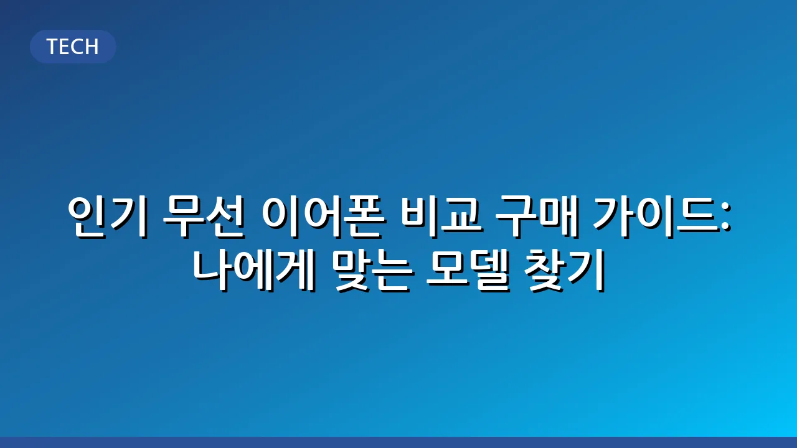

인기 무선 이어폰 비교 구매 가이드: 나에게 맞는 모델 찾기
바야흐로 무선 이어폰의 시대입니다. 복잡한 선 없이 자유롭게 음악을 듣고 통화할 수 있는 편리함 덕분에, 무선 이어폰은 이제 스마트폰만큼이나 필수적인 전자기기가 되었습니다. 하지만 시중에는 너무나도 많은 브랜드와 모델이 쏟아져 나와 어떤 제품을 골라야 할지 막막하게 느껴질 때가 많습니다. 이 글은 무선 이어폰 구매를 고민하는 분들을 위해, 주요 고려 사항부터 인기 모델의 특징, 그리고 나에게 꼭 맞는 제품을 선택하는 방법까지 상세히 안내해 드립니다.
📌 관련해서 나에게 딱 맞는 노트북 찾기: 사용 목적별 노트북 추천 가이드도 함께 참고해보세요.
성공적인 무선 이어폰 구매를 위해서는 음질, 착용감, 배터리 성능, 편의 기능, 그리고 가격 등 여러 요소를 종합적으로 비교하고 자신의 라이프스타일에 맞는 우선순위를 설정하는 것이 중요합니다. 이 가이드를 통해 여러분의 사용 목적과 예산에 부합하는 최고의 무선 이어폰을 찾는 데 실질적인 도움을 얻으시길 바랍니다.
무선 이어폰 구매 시 고려해야 할 핵심 요소
무선 이어폰을 선택할 때 개인의 만족도를 높이려면 다음 핵심 요소들을 꼼꼼히 살펴보는 것이 좋습니다.
- 음질: 가장 기본적이면서도 중요한 요소입니다. 고음질 코덱(LDAC, aptX 등) 지원 여부, 드라이버의 종류와 크기 등이 음질에 영향을 미칩니다. 일반적으로 고음질을 추구한다면 오디오 전문 브랜드의 제품을 고려해볼 수 있습니다.
- 노이즈 캔슬링 (ANC): 외부 소음을 효과적으로 차단하여 음악에만 집중할 수 있게 해주는 기능입니다. 주로 대중교통 이용자나 소음이 많은 환경에서 작업하는 분들에게 필수적입니다. 주변 소리를 들을 수 있게 해주는 ‘주변 소리 듣기’ 모드도 유용한 기능 중 하나입니다.
- 착용감 및 디자인: 장시간 착용에도 편안해야 합니다. 인이어, 오픈형, 커널형 등 다양한 디자인이 있으며, 귀 모양과 사용 습관에 따라 적합한 형태가 다릅니다. 가볍고 안정적인 착용감을 제공하는 제품을 선택하는 것이 중요합니다.
- 배터리 성능: 한 번 충전으로 얼마나 오래 사용할 수 있는지, 충전 케이스를 포함한 총 사용 시간은 어느 정도인지 확인해야 합니다. 장거리 이동이 잦거나 충전이 어려운 환경이라면 긴 배터리 수명을 가진 제품이 유리합니다.
- 연결 안정성 및 편의 기능: 블루투스 버전(최신 버전일수록 연결 안정성과 전력 효율성 우수), 멀티포인트(여러 기기 동시 연결), 터치 또는 물리 버튼 컨트롤, 전용 앱을 통한 설정 커스터마이징 등 편의 기능도 고려 대상입니다.
- 가격대: 보급형부터 프리미엄까지 다양한 가격대의 제품이 존재합니다. 자신의 예산 범위 내에서 최고의 성능과 기능을 제공하는 제품을 선택하는 것이 합리적입니다.
주요 무선 이어폰 브랜드 및 인기 모델 특징
시중에는 수많은 무선 이어폰이 나와 있지만, 몇몇 브랜드는 특유의 기술력과 사용자층을 바탕으로 큰 인기를 끌고 있습니다. 각 브랜드의 일반적인 특징을 살펴보겠습니다.
- Apple AirPods (Pro, Max): 아이폰, 아이패드, 맥 등 애플 기기 사용자에게 최적화된 연동성을 자랑합니다. 직관적인 사용성과 안정적인 성능이 강점이며, 특히 에어팟 프로와 에어팟 맥스는 뛰어난 노이즈 캔슬링 성능으로 유명합니다.
- Samsung Galaxy Buds 시리즈: 삼성 갤럭시 스마트폰 사용자에게 최고의 호환성을 제공합니다. 다양한 모델이 출시되어 선택의 폭이 넓으며, 편리한 통화 기능과 균형 잡힌 음질이 특징입니다.
- Sony WF-1000XM 시리즈: 탁월한 음질과 업계 최고 수준의 노이즈 캔슬링 성능으로 오디오 애호가들 사이에서 높은 평가를 받습니다. 고음질 코덱 지원과 개인 맞춤형 사운드 설정 등 고급 기능이 탑재되어 있습니다.
- Bose QuietComfort Earbuds 시리즈: 소니와 함께 노이즈 캔슬링 분야에서 양대 산맥으로 꼽히는 브랜드입니다. 강력한 노이즈 캔슬링과 함께 풍부하고 균형 잡힌 사운드를 제공합니다.
- JBL, Anker, Jabra 등: 각각 특유의 음색, 가성비, 통화 품질 등 특정 강점을 내세우며 다양한 소비자층을 공략하고 있습니다.
이처럼 다양한 브랜드와 모델의 최신 정보를 한곳에서 비교하고 싶다면, 주요 온라인 쇼핑몰이나 IT 전문 리뷰 웹사이트를 방문하여 사용자 리뷰와 전문가 평가를 살펴보시는 것을 추천합니다. 실제 사용 후기는 제품 선택에 큰 도움이 될 수 있습니다.
나에게 맞는 무선 이어폰 선택 가이드
앞서 살펴본 핵심 요소와 브랜드별 특징을 바탕으로, 자신의 사용 목적에 맞는 무선 이어폰을 선택하는 것이 가장 중요합니다. 다음 표를 통해 주요 사용 시나리오별 추천 포인트를 확인해 보세요.
| 사용 시나리오 | 핵심 고려 사항 | 추천 기능/특징 |
|---|---|---|
| 출퇴근/통학 | 외부 소음 차단, 편안한 착용감, 통화 품질 | 강력한 노이즈 캔슬링(ANC), 주변 소리 듣기 모드, 안정적인 착용감, 듀얼 마이크 |
| 운동/액티비티 | 땀 및 방수 기능, 안정적인 고정, 휴대성 | IPX 등급 방수/방진, 이어 팁/윙 팁으로 안정적인 착용, 가벼운 무게, 충전 케이스 |
| 음악 감상 | 고음질, 풍부한 사운드, 다양한 EQ 설정 | 고음질 코덱(LDAC, aptX 등) 지원, 넓은 재생 주파수 범위, 전용 앱을 통한 사운드 커스터마이징 |
| 사무용/온라인 회의 | 선명한 통화 품질, 멀티포인트, 긴 사용 시간 | 노이즈 감소 마이크, 멀티포인트(다중 기기 연결), 긴 배터리 시간, 편안한 장시간 착용감 |
예산 또한 중요한 고려 사항입니다. 한정된 예산 내에서 가장 우선시하는 기능에 집중하여 제품을 선택하는 것이 현명합니다. 예를 들어, 운동용이라면 방수 기능을 최우선으로, 음질이라면 고음질 코덱 지원 여부를 중요하게 볼 수 있습니다.
무선 이어폰 관리 및 사용 팁
좋은 무선 이어폰을 구매했더라도 올바르게 관리하고 사용해야 오랜 기간 최상의 성능을 유지할 수 있습니다. 몇 가지 팁을 알려드립니다.
- 정기적인 청소: 이어팁과 유닛 부분에 쌓이는 귀지나 이물질은 음질 저하와 위생 문제를 일으킬 수 있습니다. 면봉이나 부드러운 천으로 주기적으로 닦아주는 것이 좋습니다.
- 올바른 충전 습관: 배터리 수명 연장을 위해 과충전 및 완전 방전을 피하는 것이 좋습니다. 제조사가 권장하는 충전 방식과 어댑터를 사용하는 것이 안전합니다.
- 펌웨어 업데이트: 제조사는 제품의 성능 개선 및 버그 수정을 위해 정기적으로 펌웨어 업데이트를 제공합니다. 전용 앱을 통해 최신 펌웨어를 유지하는 것이 중요합니다.
- 분실 방지: 작은 크기 때문에 분실 위험이 높습니다. 케이스에 보관하는 습관을 들이고, 분실 방지 기능(예: 이어폰 찾기 기능)을 적극 활용하는 것이 좋습니다.
이 외에도 직사광선이나 고온 다습한 환경을 피하고, 떨어뜨리거나 충격을 주지 않도록 주의하는 것이 중요합니다.
결론
무선 이어폰은 이제 일상생활에서 떼려야 뗄 수 없는 동반자가 되었습니다. 수많은 제품 중에서 '최고의' 무선 이어폰은 존재하지 않으며, 오직 '나에게 가장 적합한' 무선 이어폰만이 있을 뿐입니다. 이 가이드에서 제시한 핵심 고려 사항과 사용 목적별 선택 팁을 참고하여, 여러분의 생활에 편리함과 즐거움을 더해줄 최고의 무선 이어폰을 성공적으로 찾아내시길 바랍니다. 구매 전에는 반드시 최신 리뷰와 제품 정보를 확인하여 후회 없는 선택을 하시길 바랍니다.
관련 추천 상품
이 포스팅은 쿠팡 파트너스 활동의 일환으로, 이에 따른 일정액의 수수료를 제공받습니다.